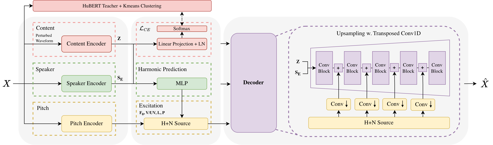

VC-SD: Controllable Voice Conversion and Speaker Design
For Real-Time Communication and Practical Applications [paper (pending)] [code]
Abstract
Recent advances in artificial intelligence have significantly enhanced speech synthesis, drawing renewed attention to voice conversion. Despite this progress, the computational complexity of most existing voice conversion models limits their deployment in real-time, practical applications. Moreover, current approaches primarily focus on speaker-identity matching rather than on enabling natural, flexible, and controllable speech modifications. In this work, we present VC-SD, a real-time, deep-learning-based voice conversion and speaker design pipeline tailored for real-time communication and practical use. Our system achieves interpretable speaker modification while preserving prosody and linguistic content, allowing individuals to generate realistic speaker profiles. We evaluate the proposed framework using both objective and subjective metrics for naturalness and speaker design, demonstrating that VC-SD produces high-fidelity and convincingly personalized speech. Furthermore, we present a targeted therapeutic use case; avatar therapy, a treatment of auditory hallucinations, for which our framework is specifically designed.
